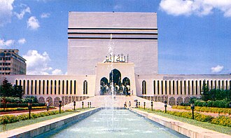

Pagpapakilala
Baitul Mukarram, également orthographiée Baytul Mukarrom, située dans la capitale Dacca, est la mosquée nationale du Bangladesh.
بيت المكرَّم هو المسجد الوطني في بنغلاديش، يقع في وسط دكا عاصمة بنغلاديش، تم الانتهاء من المسجد في عام 1968، لدى المسجد طاقة استيعابية تبلغ 30,000 مصلي، وهذه السعة تعطي المسجد مركز متقدم على مستوى مساجد العالم كونه واحد من أكبر مسجد 10 مساجد في العالم، لكن المسجد يوجه اكتظاظ باستمرار يحدث هذا خصوصا في شهر رمضان المبارك مما أدى بالحكومة البنغلاديشية إلى إضافة ملحقات للمسجد وبالتالي زيادة القدرة الاستيعابية إلى 40,000 مصلي على الأقل.
Baitul Mukarram, officially Baitul Mukarram National Mosque, is the national mosque of Bangladesh. It is located at the center of Dhaka, the capital of Bangladesh. The mosque was completed in 1968. It has a capacity of more than 42,000 worshippers.
Masjid Nasional Baitul Mukarram adalah sebuah Masjid Nasional di Bangladesh. Terletak di pusat Dhaka, ibukota Bangladesh, masjid ini selesai dibangun pada tahun 1968. Ia memiliki kapasitas 40.000.
بیت المکرم بنگلہ دیش کی قومی مسجد جو دار الحکومت ڈھاکہ کے قلب میں واقع ہے۔ یہ مسجد 1960ء کی دہائی میں تعمیر ہوئی۔
Das Baitul Mokarram ist Bangladeschs größte Moschee und steht im Zentrum der Hauptstadt Dhaka.
Baitul Mukarram es la mezquita nacional de Bangladés. Ubicada en el corazón de Daca, capital de Bangladés, este edificio se completó en 1968. Tiene una capacidad de 30.000 personas, y constituye la décima mezquita del mundo en tamaño. No obstante, esta mezquita siempre está atestada de visitantes, especialmente durante el mes de Ramadán; el gobierno ha ampliado su capacidad para alojar como mínimo 40.000 personas.
白圖穆卡蘭清真寺，位于孟加拉国首都达卡市的市中心，是孟加拉国的国家清真寺。白圖穆卡蘭清真寺於1968年落成，當時可容納3萬人，是全世界第十大的清真寺，但在齋戒月等祭典時仍過於擁擠，因此孟加拉政府曾擴建此清真寺，現可容納4萬人。
Байтул-Мукаррам, — национальная мечеть Бангладеш. Расположена в Дакке, столице Бангладеш. Строительство мечети было начато в 1960 году и завершено в 1968 году.
Baitul Mukarram, cũng viết là Baytul Mukarrom là nhà thờ Hồi giáo quốc gia của Bangladesh. Nằm ở trung tâm của Dhaka, thủ đô của Bangladesh, nhà thờ Hồi giáo được hoàn thành vào năm 1968. Nhà thờ Hồi giáo có sức chứa 30.000 người, trở thành nhà thờ Hồi giáo lớn thứ 10 trên thế giới. Tuy nhiên, nhà thờ Hồi giáo chịu ảnh hưởng quá tải, đặc biệt là vào tháng Ramadan của Hồi giáo. Kết quả là, chính phủ Bangladesh đã bổ sung các phần mở rộng cho nhà thờ Hồi giáo, tăng công suất lên ít nhất 40.000 người.
บัยตุลมุกัรร็อม เป็นมัสยิดแห่งชาติของประเทศบังกลาเทศ ตั้งอยู่ที่ใจกลางธากา เมืองหลวงของประเทศ มัสยิดนี้สร้างเสร็จใน ค.ศ. 1968 โดยมีความจุมากกว่า 42,000 คน
Baitul Mukarram är den nationella moskén i Bangladesh. Den uppfördes 1960 och är belägen nära hjärtat av huvudstaden Dhaka.
Sa mapa
Mga dokumento at link
- Wikipédia — Français
- Wikipédia — العربية
- Wikipédia — English
- Wikipédia — Bahasa Indonesia
- Wikipédia — اردو
- Wikipédia — Deutsch
- Wikipédia — Español
- Wikipédia — 中文
- Wikipédia — Русский
- Wikipédia — Tiếng Việt
- Wikipédia — ไทย
- Wikipédia — Svenska
- Wikidata — Q804009
Datos: Wikidata (CC0), ina-update tuwing 3 buwan. Ang taon ay ang pinakamaagang alam na petsa ng pagkakatayo ng gusali: para sa gusaling naging moske kalaunan (gaya ng Hagia Sophia), ito ang taon ng orihinal na gusali. Mga larawan: Wikimedia Commons, ang may-akda at lisensiya ay nasa pahina ng bawat larawan.